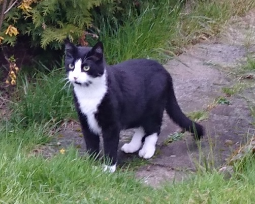
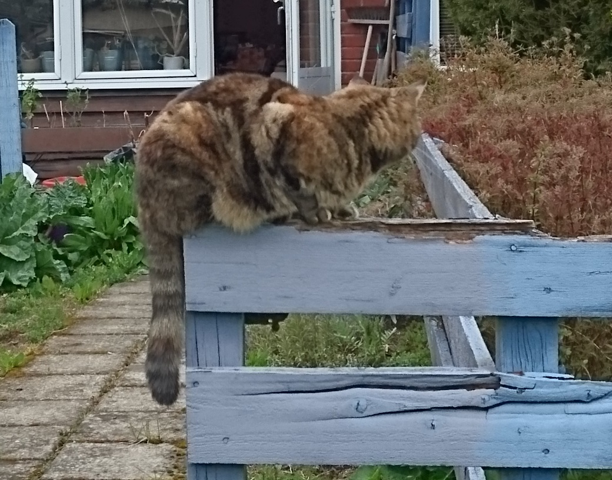

I assisted the CEO and the Board, took meeting minutes, handled basic office administration, edited presentation material, updated the company website, recruited staff, was in charge of corporate administration, and many other various tasks.
Introduction
I like being in charge of the administration, it suits me to be in the center of things, dealing with contractors, helping out the shareholders and charming investors and other VIPs. I’m used to be self-leading, working under pressure with a multitude of parallel commitments and I usually managed my own time. My main contribution to the workplace is my drive, my discipline, and my composure. It is important for me to deliver, that everything flows and I always strive to have full control of the office.
Experience
Vita In Mare AB, remote
Executive Assistant
2015 - 2020
Education
Nicolaiskolan, Helsingborg
Scientific secondary education (Naturvetenskapligt gymnasieprogram)
1993 – 1996
Other Skills
Language Skills
- Swedish - native language
- English - fluent
IT Skills
- Office 365 - proficient
- HTML - beginner
- CSS - beginner
Personal
I live in an appartment with my two cats: Bonnie and Knappen.
 